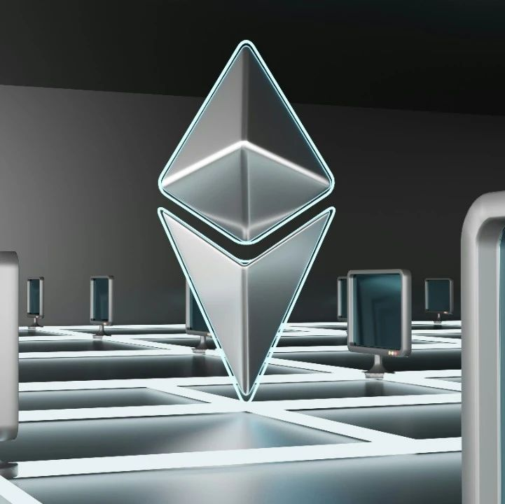

Dencun升级：以太坊迈向2.0的关键一步
作者: 古忆
Dencun（也称Cancun-Deneb）升级，预计将于UTC 2024-03-13 13:55:35 完成在以太坊主网上的部署。

Dencun（也称Cancun-Deneb）升级，预计将于UTC 2024-03-13 13:55:35完成在以太坊主网上的部署。这次升级不仅开启了以太坊的“The Surge”时代，还全面提升了网络的可扩展性、效率与安全性。作为以太坊发展历程中的一个重要里程碑，Dencun升级旨在通过引入一系列改进提案（EIP）来解决网络高交易费用和低吞吐量的长期问题。这次升级的名称“Cancun-Deneb”结合了两个方面的改进：Cancun升级专注于提高以太坊的执行层性能，而Deneb升级则聚焦于共识层的提升。在合并之前，以太坊由执行层和共识层两部分独立运行。执行层负责智能合约逻辑的执行，也就是交易的实际计算发生地，维护网络状态和执行EVM代码。而共识层通过PoS质押确保交易和智能合约得到验证，实现节点间的共识，合并后形成了所谓的信标链，即以太坊2.0。合并后的以太坊执行层和共识层通过引擎API接口相互通信，允许两层之间的信息交换和协调。随着DeFi和NFT等领域的快速增长，网络拥堵和高昂的Gas费用成了显著的挑战。虽然Rollups技术通过链下处理交易以显著降低了许多用户的费用，但仍面临数据可用性和成本效率的挑战。针对这些问题，Dencun升级打包升级的9个EIPs中，EIP-4844最为核心，它通过引入一种新的交易格式——携带blob的交易，提供了一个更高效且成本更低的临时解决方案。这种新型交易设计允许包含大量数据，虽然这些数据不能被EVM直接访问，但可以访问其承诺。这一设计的主要目标是为像Rollups这样的无需信任的扩容解决方案提供一个临时的扩容路径，同时确保其与未来的完全分片技术兼容。对于Optimism、Arbitrum和ZK Rollups等方案来说，这意味着相比于以太坊本身，交易费用显著降低。EIP-4844的核心在于，通过引入与未来分片规范兼容的blob交易，并设立独立的费用市场，以显著降低交易费用并控制其使用量。它既不增加Rollups开发者的负担，又能通过降低calldata的Gas成本和提前引入分片数据格式，是一种临时的扩容解决方案。设计上考虑了在当前实施与完全分片技术所需工作之间的平衡，覆盖了新交易类型、执行层逻辑和共识验证逻辑等多个方面，旨在为完全分片的实现铺平道路。此外，它还调整了Rollups的运作方式，例如通过将Rollup区块数据放入blobs中来降低成本，并确保数据一次性可用。通过使用版本化哈希和预编译返回数据的方法，提高了向前兼容性，并引入了Blob基础费用更新规则以调节费用市场。EIP-4844试图通过限制每个区块中blob的总大小来减少对网络的即时影响，并预计在未来通过网络升级来逐步增加这一容量。EIP-4844允许将“blobs”以较低的成本存储在以太坊上，直到更长期的解决方案如数据分片得以实现。这样的设计能够减轻网络的压力，并为以太坊的可扩展性和性能提升提供一个中间步骤。Dencun升级预计为以太坊网络及其生态系统带来多项重要好处，解决了网络当前面临的一些关键问题，并为新用户及新用例的接入拓宽了途径，从而增强了网络的潜在能力。首先，Dencun升级将通过原始danksharding显著提高以太坊的网络吞吐量，为Layer 2 Rollups提供临时的额外数据存储空间，从而使每秒交易量得到大幅提升。其次，这一升级将有效降低Gas费用。在原始danksharding的助力下，Layer 2汇总的Gas费用将大幅下降，这意味着在Optimism和Arbitrum One等Optimistic L2 rollups上进行代币交易的成本将大幅减少，使得以太坊网络能够更加有效地与全球支付巨头如Visa和Mastercard竞争。根据Superchain Savings Estimator的数据，EIP-4844实施后，基础L2代币交易的Gas费用预计将从0.58美元降低到0.01美元。安全性也将因Dencun升级而得到加强，特别是通过实施EIP-6780来禁用SELFDESTRUCT代码，从而减少智能合约的终止风险，增强对用户数据及其资产的保护。此外，升级将通过EIP-4788改善跨链通信，预计将优化跨链桥梁和权益池的功能，使得不同区块链网络之间能够实现无缝且安全的交互。Dencun升级还将优化数据存储。EIP-1153将引入不被以太坊全局状态存储的新操作码，从而优化区块空间的使用，并使Gas费用的使用更加高效。最后，这次升级为实现完全danksharding做好了准备，这是以太坊"The Surge"的最终目标，预计将实现每秒处理超过100,000笔交易的能力。虽然完全实现danksharding还需数年时间及多次网络升级，原始danksharding作为Dencun升级的一部分，将作为重要的基础步骤。总而言之，Dencun升级通过一系列精心设计的改进措施，不仅显著提升了以太坊网络的处理能力，降低了交易成本，还增强了安全性、改进了跨链通信，并优化了数据管理，为以太坊网络的长期发展奠定了坚实基础。
如果你足够了解坎昆升级
可以参与Ethereum Cat Herders的L2E领取纪念坎昆升级的NFThttps://l2e.ethereumcatherders.com/